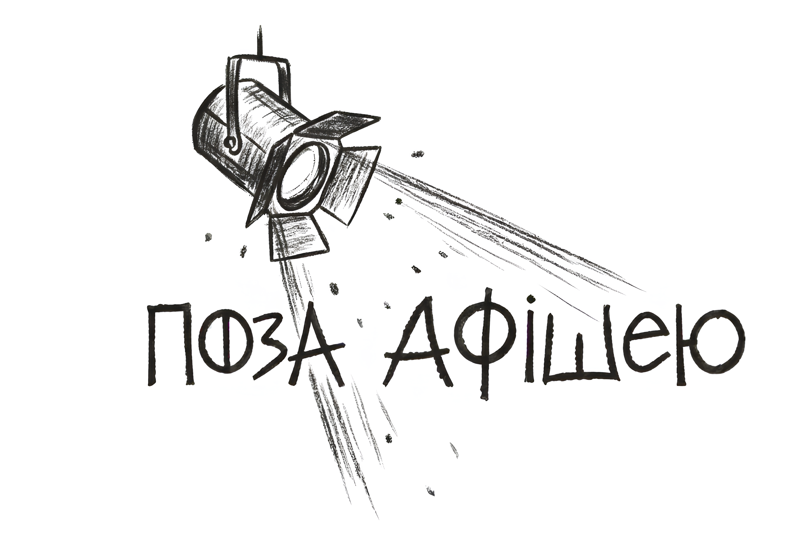

Повний текст рецензії буде додано після підготовки.
ТЕАТРДикий театрПерейти до сторінки театру ↗Рецензія · Дикий театр
«Метод 46»
Рецензія на виставу Дикого театру.
ПА / 0146МЕТОД

TelegramНезалежна сцена Києва
Онлайн-платформа про сучасний незалежний театр Києва. Розповідаємо про колективи, вистави, творчі пошуки та процеси театрального середовища.
Читати публікації ↓Читайте й відкривайте
Рецензія на виставу Дикого театру.
Читати матеріал ↗Матеріал про лекцію Миколи Набоки, присвячену педагогіці Жака Лекока.
Читати матеріал ↗Відгук на українське видання книги Жака Лекока від ArtHuss.
Читати матеріал ↗Театр не закінчується, коли гасне світло.
Найцікавіше часто починається поза афішею.
Колективи та сцени
Колективи з’являтимуться тут у міру підготовки перевірених матеріалів.
Поза афішею · Платформа
«Поза афішею» — спеціалізована онлайн-платформа про сучасний незалежний театр Києва.
Популяризувати незалежний театр Києва та систематично висвітлювати діяльність незалежних театральних колективів, їхні творчі пошуки, актуальні тенденції й проблеми функціонування.
Про вистави, діяльність театральних колективів, режисерську й акторську роботу, сценографію, театральну освіту та взаємодію театру з аудиторією.
На платформі виходять рецензії, інтерв’ю, репортажі, творчі портрети та аналітичні статті. Рецензії присвячені аналізу вистав; інтерв’ю й творчі портрети — представникам театрального середовища; репортажі — театральним подіям; аналітика — проблемам функціонування незалежних театрів Києва.
Для глядачів і потенційних глядачів незалежних театрів Києва, які цікавляться сучасними виставами, діяльністю колективів і подіями незалежної сцени. Також для студентів мистецьких, культурологічних і медійних спеціальностей.
Сцени та колективи Києва
Колективи, про які виходять матеріали на платформі «Поза афішею».
Нові сторінки колективів додаватимуться після підготовки перевіреної інформації.
Рецензії · інтерв’ю · репортажі · аналітика
Авторські матеріали «Поза афішею» про незалежний театр Києва.
Наступні рецензії з’являться тут після підготовки.
Матеріали цього жанру готуються.
Матеріали цього жанру готуються.
Матеріали цього жанру готуються.
Будьмо на зв’язку
Нові публікації та оновлення платформи виходять у Telegram-каналі «Поза афішею».
Театр · Київ
Заснований Ярославою Кравченко в Києві у лютому 2016 року.
Дикий театр заснувала Ярослава Кравченко в Києві у лютому 2016 року. Розширена довідка про колектив з’явиться після перевірки інформації.
Перелік вистав буде додано після перевірки.
Офіційне покликання буде додано.
Рецензія · Дикий театр
Рецензія на виставу Дикого театру.
Повний текст рецензії буде додано після підготовки.
ТЕАТРДикий театрПерейти до сторінки театру ↗Театральна освіта · Лекція
Матеріал про лекцію Миколи Набоки, присвячену педагогіці Жака Лекока.
Повний текст матеріалу буде додано після підготовки.
ПОВ’ЯЗАНИЙ МАТЕРІАЛ«Поетика тіла: педагогіка театрального творення»Відгук на книгу Жака Лекока ↗Книжковий відгук · 2026
Відгук на українське видання книги Жака Лекока, випущене видавництвом ArtHuss у 2026 році.
Повний текст відгуку буде додано після підготовки.
ПОВ’ЯЗАНИЙ МАТЕРІАЛ«Поетика тіла Жака Лекока»Матеріал про лекцію Миколи Набоки ↗Аналітика · 2026
Матеріал про умови роботи незалежних театрів під час повномасштабної війни.
У матеріалі розглянуто фінансування, доступ до сценічних просторів, безпекові умови проведення показів, кадрові зміни, аудиторію та взаємодію між незалежними театрами.
Повний текст статті буде додано після підготовки.